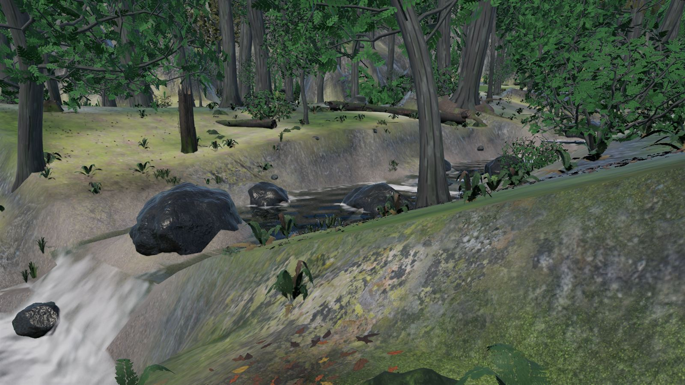
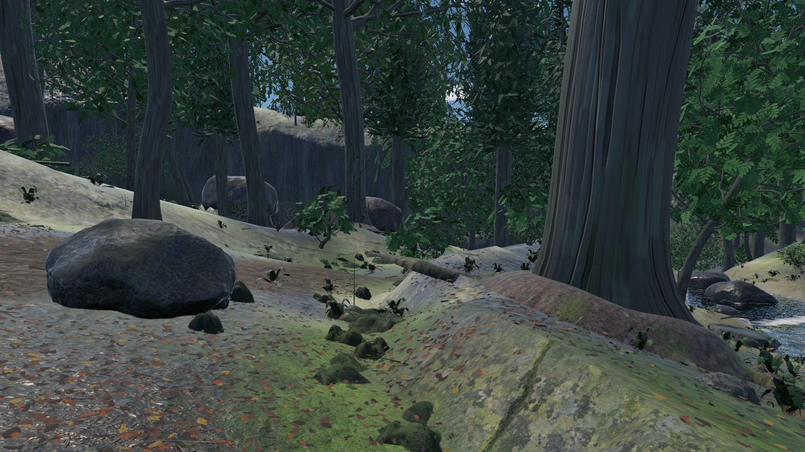
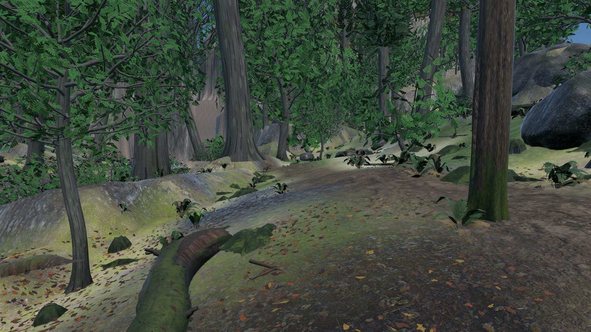
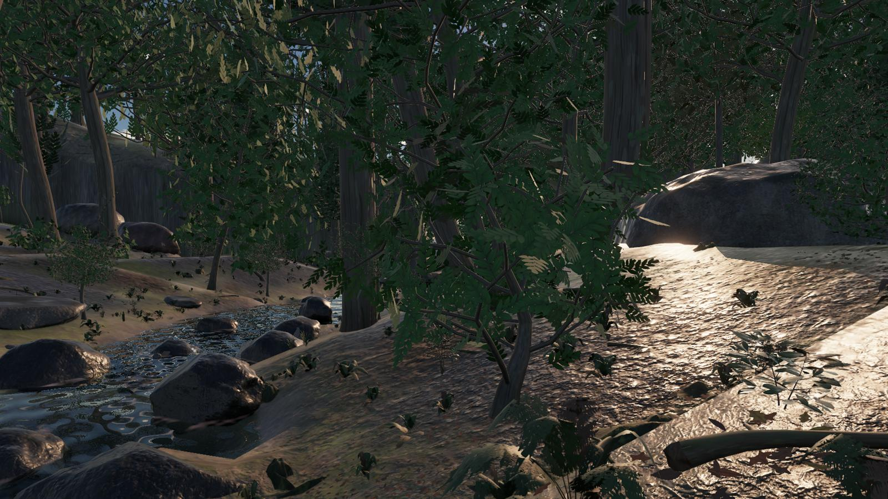
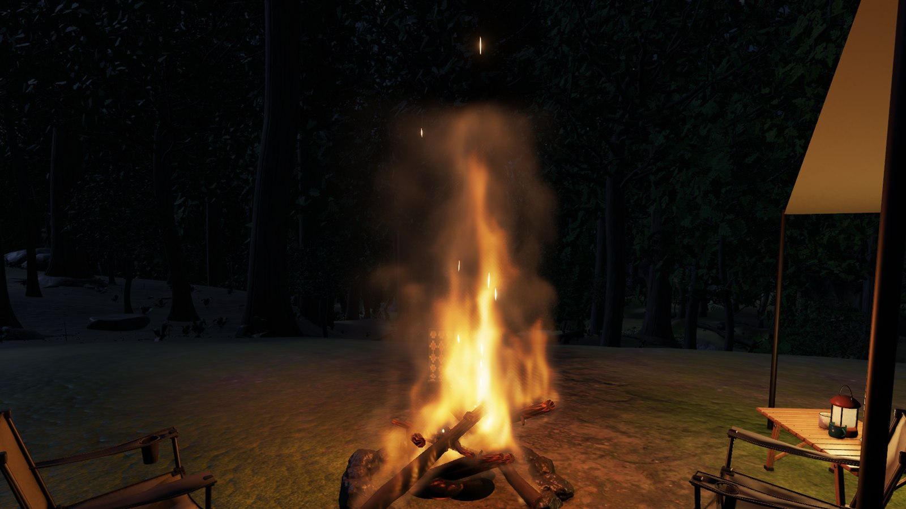
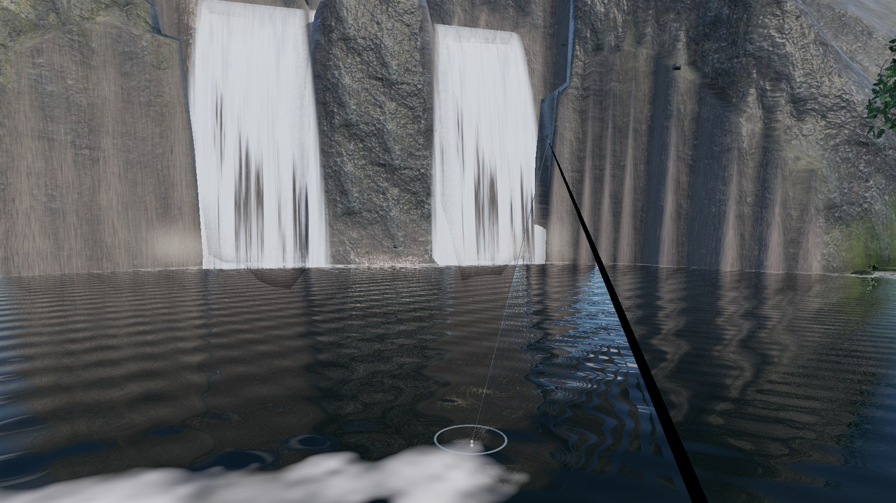

渓のほとり
動画（仮）
山あいの渓流で、景色を眺めながらのんびり過ごすゲームです（制作中）。大きな山並みの中の谷底を一人称で歩き、苔むした岩の間を段になって落ちる流れや、見上げるほど大きな滝、深い緑の淵、木漏れ日の森を眺めます。点数や失敗は無く、釣りもできます。写実寄りの景色と落ち着きを第一に、自作の DirectX12 エンジンの上で作っています。
概要
| 制作期間 | 2026年5月〜 |
|---|---|
| 担当 | 企画、プログラム、シェーダー |
| 開発環境 | C++、HLSL、DirectX12（自作エンジン）、Visual Studio 2026 |
実装した機能
GPU の浅い水の計算で流れる渓流
段になって落ちる渓流の水を、計算シェーダーで浅水方程式を解いて毎フレーム動かしています。水面の描画はエンジンの水面に任せ、計算した水面の点を GPU のまま読ませています。
- 有限体積法の HLL 流束と静水圧の再構成で解き、段のある川床でも静かな水が静かなままになるようにした。底の摩擦はマニングの式
- 格子は 0.5 m。状態は 2 本のバッファを交互に使い、1 フレームの時間を 0.0125 秒以下の同じ長さの歩（最大 4 歩）に分けて進める
- 同じ計算の CPU 版を持ち、GPU の結果を読み戻して答え合わせできる
- 泡は流れに乗せて運び、少しずつ消していく

滝と瀬のしぶき
滝と、計算した流れの速い瀬に、しぶきと霧の粒を出しています。
- しぶきは白い小さな粒を飛ばして重さで落とし、滝には大きく薄い霧の粒も漂わせる
- 出す所は滝と、流れの速い瀬の上位 8 か所。カメラから 40 m より遠い所は止める
- 粒は光を受けないので、時刻の明るさで色を暗くする
画像（仮）
一人称の歩きと谷の決まり
谷の格子の高さと水深から、どこを歩けて、どれだけの速さで進めるかを決めています。
- 歩く速さは 1.5 m/s。傾きが 30° を超えると遅くなり、45° より急な所は登れない
- 水深 0.2 m までの浅瀬は渡れ、水の中では 0.7 倍の速さになる
- キャンプの道具、大岩、木の幹、倒木に当たる
- 足音は足元の地面（土、落ち葉、石、水）で替わる

手続きで置く森と獣道
谷の森を、決まった乱数で手続きに置いています。同じ谷と乱数の種からは、いつも同じ森ができます。
- 手続きで作る広葉樹と杉に、若木、低木、シダ、苔、切り株、倒木、落ち葉などを合わせて置き、モデルには LOD を付ける
- 獣道は、歩ける所の上で傾きと水際を避ける費用の一番安い道を、拠点から行き先へ探して作る（道は根元を共有して枝分かれする）
- 獣道の上と拠点の周りには物を置かず、地形の色は道の所を土にする

1 日の時間と天気
時刻から太陽と月の向き、光の色、露出、雲の量を決め、1 日の移り変わりを作っています。
- 1 日は実時間で 48 分。日の出は 5:30、日の入りは 18:30
- 天気（晴れ・曇り・小雨）は日の番号から決まる乱数で決め、セーブした日から同じ天気に戻る
- 雨はカメラの周りに格子に並べた粒の出し口から降らせ、雨の強さで数を変える（毎秒最大 5500 粒）
- タープの下では雨が降らず、雨の音を屋根を打つ音に混ぜ替える

キャンプとセーブ
谷の中の拠点に、たき火とタープ、テントのあるキャンプを置いています。
- たき火はエンジンの体積の火で描き、火の熱に合わせて明かりを揺らす
- 椅子に座れる。夕方より後にテントで眠ると、時刻を速めて次の朝へ進める
- 眠ったときと場面を終えるときに、日・時刻・位置・持ち物などを JSON にセーブする
- 懐中電灯を持って夜の川辺を歩ける

渓流の釣り
景色を眺めるついでに、渓流で釣りもできます。浮きは、GPU で計算した水の流れに乗って流れます。
- 溜めの長さで 3〜15 m 投げる。浮きの所の水は、GPU の状態を 0.25 秒ごとに読み戻して使う
- 待つ → つつき → 本当たり → 合わせ → 巻く → 眺める → 放す、を段階で持つ
- 魚は 4 種（イワナ、ヤマメ、カワムツ、タカハヤ）。釣った魚は手帳に残る
